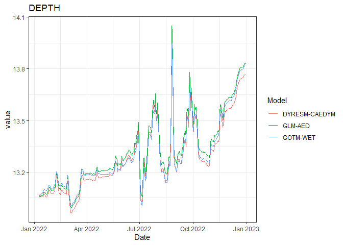

The Aquatic Ecosystem Model Ensemble (AEME) package allows you to setup and run an ensemble of aquatic ecosystem models. The models are DYRESM-CAEDYM, GLM-AED and GOTM-WET.
Installation
You can install the development version of AEME from GitHub with:
# install.packages("devtools")
devtools::install_github("limnotrack/AEME")Example
This is a basic example which shows you how to build and run one of the models in the ensemble:
library(AEME)
#>
#> Attaching package: 'AEME'
#> The following object is masked from 'package:stats':
#>
#> time
## basic example code
tmpdir <- tempdir()
aeme_dir <- system.file("extdata/lake/", package = "AEME")
# Copy files from package into tempdir
file.copy(aeme_dir, tmpdir, recursive = TRUE)
#> [1] TRUE
path <- file.path(tmpdir, "lake")
aeme_data <- yaml_to_aeme(path = path, "aeme.yaml")
#> Linking to GEOS 3.11.2, GDAL 3.6.2, PROJ 9.2.0; sf_use_s2() is FALSE
#> Warning in aeme_constructor(lake = yaml$lake, catchment = yaml$catchment, : Lake area [152343 m2] is different to the area calculated from the lake
#> shape [152433.09 m2].
mod_ctrls <- read.csv(file.path(path, "model_controls.csv"))
inf_factor = c("dy_cd" = 1, "glm_aed" = 1, "gotm_wet" = 1)
outf_factor = c("dy_cd" = 1, "glm_aed" = 1, "gotm_wet" = 1)
model <- c("dy_cd", "glm_aed", "gotm_wet")
aeme_data <- build_ensemble(path = path, aeme_data = aeme_data, model = model, mod_ctrls = mod_ctrls, inf_factor = inf_factor, ext_elev = 5, use_bgc = TRUE, use_lw = TRUE)
#> Building simulation for Wainamu [2023-09-05 12:39:16.413652]
#> Using observed water level
#> Estimating temperature using Stefan & Preud'homme (2007)...
#> Building DYRESM-CAEDYM for lake wainamu
#> Copied in DYRESM par file
#> [1] "TEMPTURE SALINITY DO PO4 DOPL POPL PIP TP NH4 NO3 DONL PONL TN DOCL POCL SiO2 CYANO CHLOR FDIAT TCHLA SSOL1"
#> Downsampling bathymetry
#> Building GLM3-AED2 model for lake wainamu
#> Copied in GLM nml file
#> Copied in AED nml file
#> oxy_initial = 625 replaced with 312.5
#> frp_initial = 0.3229 replaced with 0.3229
#> dop_initial = 0.3229 replaced with 0.3229
#> pop_initial = 0.3229 replaced with 0.3229
#> amm_initial = 1.4279 replaced with 1.4279
#> nit_initial = 1.0709 replaced with 1.0709
#> don_initial = 21.4183 replaced with 21.4183
#> pon_initial = 7.1394 replaced with 7.1394
#> doc_initial = 41.6285 replaced with 41.6285
#> poc_initial = 16.6514 replaced with 16.6514
#> rsi_initial = 1 replaced with 1
#> PHY_cyano 0.24022 replaced with 0.24022
#> PHY_green 0.300275 replaced with 0.300275
#> PHY_diatom 0.300275 replaced with 0.300275
#> ss_initial = 3,3 replaced with 3,
#> Building GOTM-WET for lake wainamu
#> Copied all GOTM configuration files
aeme_data <- run_aeme(aeme_data = aeme_data, model = model, verbose = FALSE, path = path, parallel = TRUE, mod_ctrls = mod_ctrls)
#> Running models in parallel... [2023-09-05 12:39:31.100874]
#> Model run complete![2023-09-05 12:43:05.861538]
#> Reading models in parallel... [2023-09-05 12:43:18.606444]
#> Model reading complete![2023-09-05 12:43:24.986415]The model input and output (I/O) is handled as it’s own S4 object of class aeme. This allows for the standardisation and generalisation of functions for this class alongside ensuring integrity and validity to it’s structure.
class(aeme_data)
#> [1] "aeme"
#> attr(,"package")
#> [1] "AEME"This allows for easier handling of the model output data within our structure and allows for condensed output to be printed to the console:
aeme_data
#> AEME
#> -------------------------------------------------------------------
#> Lake
#> Wainamu (ID: 45819); Lat: -36.89; Lon: 174.47; Elev: 23.64m; Depth: 13.07m;
#> Area: 152343 m2; Shape file: Present
#> -------------------------------------------------------------------
#> Catchment
#> Name: Wainamu; Area: 4989125 m2;
#> Shape file: Present
#> -------------------------------------------------------------------
#> Time
#> Start: 2022-01-09 Stop: 2022-12-31 Time step: 3600
#> -------------------------------------------------------------------
#> Configuration
#> Physical | Biogeochemical
#> DY-CD : Present | Present
#> GLM-AED : Present | Present
#> GOTM-WET : Present | Present
#> -------------------------------------------------------------------
#> Observations
#> Lake: Present; Level: Present
#> -------------------------------------------------------------------
#> Input
#> Inital profile: Present; Inital depth: 13.07m; Hypsograph: Present (n=132);
#> Meteo: Present; Use longwave: TRUE; Kw: 0.98
#> -------------------------------------------------------------------
#> Inflows
#> Data: Present; Scaling factors: DY-CD: 1; GLM-AED: 1; GOTM-WET: 1
#> -------------------------------------------------------------------
#> Outflows
#> Data: Present; Scaling factors: DY-CD: 1; GLM-AED: 1; GOTM-WET: 1
#> -------------------------------------------------------------------
#> Output:
#> DY-CD: Present
#> GLM-AED: Present
#> GOTM-WET: PresentSummarised easily:
summary(aeme_data)
#> Lake observations:
#> LID lake id_station station
#> Min. :45819 Length:5531 Min. :44616 Length:5531
#> 1st Qu.:45819 Class :character 1st Qu.:44616 Class :character
#> Median :45819 Mode :character Median :44616 Mode :character
#> Mean :45819 Mean :44616
#> 3rd Qu.:45819 3rd Qu.:44616
#> Max. :45819 Max. :44648
#> Date depth_from depth_to var
#> Min. :1991-05-25 Min. : 0.000 Min. : 0.000 Length:5531
#> 1st Qu.:2006-03-05 1st Qu.: 2.000 1st Qu.: 2.000 Class :character
#> Median :2012-04-14 Median : 5.000 Median : 5.000 Mode :character
#> Mean :2011-11-26 Mean : 5.008 Mean : 5.008
#> 3rd Qu.:2019-04-20 3rd Qu.: 8.000 3rd Qu.: 8.000
#> Max. :2024-06-09 Max. :15.000 Max. :15.000
#> value units flag_detection
#> Min. : 0.000 Length:5531 Mode:logical
#> 1st Qu.: 0.070 Class :character NA's:5531
#> Median : 5.500 Mode :character
#> Mean : 7.047
#> 3rd Qu.: 13.085
#> Max. :101.000
#> -------------------------------------------------------------------
#> Lake level:
#> Date lvlwtr
#> Min. :2018-12-31 Min. :23.57
#> 1st Qu.:2020-03-31 1st Qu.:23.59
#> Median :2021-06-30 Median :23.64
#> Mean :2021-06-30 Mean :23.64
#> 3rd Qu.:2022-09-29 3rd Qu.:23.69
#> Max. :2023-12-30 Max. :23.71
#> -------------------------------------------------------------------
#> Meteorology:
#> Date MET_wnduvu MET_wnduvv MET_tmpdew
#> Min. :2022-01-01 Min. :-11.16345 Min. :-10.2845 Min. : 1.718
#> 1st Qu.:2022-04-02 1st Qu.: -2.98211 1st Qu.: -3.0025 1st Qu.:10.036
#> Median :2022-07-02 Median : -0.30557 Median : -0.1780 Median :12.635
#> Mean :2022-07-02 Mean : 0.01658 Mean : -0.1501 Mean :12.528
#> 3rd Qu.:2022-10-01 3rd Qu.: 2.90679 3rd Qu.: 2.7472 3rd Qu.:15.097
#> Max. :2022-12-31 Max. : 12.76652 Max. : 10.1251 Max. :22.409
#> MET_tmpair MET_ppsnow MET_prsttn MET_radswd
#> Min. : 8.992 Min. :0 Min. : 98829 Min. : 37.76
#> 1st Qu.:13.974 1st Qu.:0 1st Qu.:100492 1st Qu.:114.64
#> Median :16.234 Median :0 Median :101065 Median :180.01
#> Mean :16.433 Mean :0 Mean :100999 Mean :187.23
#> 3rd Qu.:19.273 3rd Qu.:0 3rd Qu.:101472 3rd Qu.:255.27
#> Max. :24.478 Max. :0 Max. :103178 Max. :376.33
#> MET_radlwd MET_pprain
#> Min. :280.2 Min. : 0.0000
#> 1st Qu.:326.3 1st Qu.: 0.2425
#> Median :343.1 Median : 1.4569
#> Mean :343.8 Mean : 6.3316
#> 3rd Qu.:360.2 3rd Qu.: 8.1555
#> Max. :426.2 Max. :61.4505
#> -------------------------------------------------------------------
#> Inflows:
#> FWMT
#> Date HYD_flow HYD_temp CHM_salt
#> Min. :2018-12-31 Min. : 111.7 Min. :10.00 Min. :0
#> 1st Qu.:2020-03-31 1st Qu.: 1430.2 1st Qu.:11.47 1st Qu.:0
#> Median :2021-06-30 Median : 4677.8 Median :15.00 Median :0
#> Mean :2021-06-30 Mean : 9748.9 Mean :15.00 Mean :0
#> 3rd Qu.:2022-09-29 3rd Qu.: 11403.0 3rd Qu.:18.52 3rd Qu.:0
#> Max. :2023-12-30 Max. :247783.4 Max. :20.00 Max. :0
#> CHM_oxy PHS_frp PHS_dop PHS_pop
#> Min. : 9.234 Min. :3.235e-05 Min. :1.532e-06 Min. :6.127e-06
#> 1st Qu.: 9.513 1st Qu.:4.099e-04 1st Qu.:1.514e-05 1st Qu.:6.056e-05
#> Median :10.240 Median :1.024e-03 Median :4.051e-05 Median :1.621e-04
#> Mean :10.292 Mean :3.732e-03 Mean :1.441e-04 Mean :5.766e-04
#> 3rd Qu.:11.073 3rd Qu.:4.334e-03 3rd Qu.:1.693e-04 3rd Qu.:6.772e-04
#> Max. :11.455 Max. :4.642e-02 Max. :1.746e-03 Max. :6.983e-03
#> PHS_pip NIT_amm NIT_nit
#> Min. :2.298e-05 Min. :0.0002219 Min. :2.014e-05
#> 1st Qu.:2.271e-04 1st Qu.:0.0019064 1st Qu.:1.774e-04
#> Median :6.077e-04 Median :0.0040237 Median :4.139e-04
#> Mean :2.162e-03 Mean :0.0138761 Mean :1.184e-03
#> 3rd Qu.:2.539e-03 3rd Qu.:0.0129178 3rd Qu.:1.312e-03
#> Max. :2.619e-02 Max. :0.2016053 Max. :4.289e-02
#> NIT_don NIT_pon CAR_doc
#> Min. :0.0000785 Min. :0.0001177 Min. :0.0004457
#> 1st Qu.:0.0006400 1st Qu.:0.0009599 1st Qu.:0.0036341
#> Median :0.0015013 Median :0.0022520 Median :0.0085254
#> Mean :0.0043520 Mean :0.0065279 Mean :0.0247128
#> 3rd Qu.:0.0052643 3rd Qu.:0.0078964 3rd Qu.:0.0298936
#> Max. :0.0523152 Max. :0.0784728 Max. :0.2970757
#> CAR_poc SIL_rsi NCS_ss1 NCS_ss2 PHY_cyano
#> Min. :0.0006686 Min. :10 Min. : 0.01773 Min. :0 Min. :0.1
#> 1st Qu.:0.0054512 1st Qu.:10 1st Qu.: 0.16310 1st Qu.:0 1st Qu.:0.1
#> Median :0.0127881 Median :10 Median : 0.43163 Median :0 Median :0.1
#> Mean :0.0370693 Mean :10 Mean : 1.38127 Mean :0 Mean :0.1
#> 3rd Qu.:0.0448404 3rd Qu.:10 3rd Qu.: 1.11036 3rd Qu.:0 3rd Qu.:0.1
#> Max. :0.4456136 Max. :10 Max. :48.38967 Max. :0 Max. :0.1
#> PHY_green PHY_diatom
#> Min. :0.1 Min. :0.1
#> 1st Qu.:0.1 1st Qu.:0.1
#> Median :0.1 Median :0.1
#> Mean :0.1 Mean :0.1
#> 3rd Qu.:0.1 3rd Qu.:0.1
#> Max. :0.1 Max. :0.1
#> -------------------------------------------------------------------
#> Outflows:
#> outflow
#> Date outflow
#> Min. :2018-12-31 Min. : 0.00
#> 1st Qu.:2020-03-31 1st Qu.: 74.76
#> Median :2021-06-30 Median : 4509.66
#> Mean :2021-06-30 Mean : 9520.33
#> 3rd Qu.:2022-09-29 3rd Qu.: 13446.05
#> Max. :2023-12-30 Max. :106553.81
#> NA's :4
#> wbal
#> Date outflow_dy_cd outflow_glm_aed outflow_gotm_wet
#> Min. :2022-01-05 Min. : 0.0 Min. : 0.0 Min. : 0.0
#> 1st Qu.:2022-04-05 1st Qu.: 0.0 1st Qu.: 0.0 1st Qu.: 0.0
#> Median :2022-07-04 Median : 0.0 Median : 0.0 Median : 0.0
#> Mean :2022-07-04 Mean : 603.1 Mean : 603.1 Mean : 648.1
#> 3rd Qu.:2022-10-02 3rd Qu.: 553.6 3rd Qu.: 553.6 3rd Qu.: 689.3
#> Max. :2022-12-31 Max. :10396.4 Max. :10396.4 Max. :10380.3
#> NA's :4 NA's :4 NA's :4
#> -------------------------------------------------------------------
#> Outputs:
#> DY-CD
#> HYD_evap HYD_evap_flux HYD_Qe HYD_evap_vol
#> Min. :0.000000 Min. :0.000e+00 Min. :-33.59 Min. : 0.0
#> 1st Qu.:0.001294 1st Qu.:1.498e-08 1st Qu.: 31.15 1st Qu.: 198.8
#> Median :0.002379 Median :2.754e-08 Median : 60.23 Median : 370.6
#> Mean :0.002811 Mean :3.253e-08 Mean : 74.04 Mean : 434.7
#> 3rd Qu.:0.004028 3rd Qu.:4.662e-08 3rd Qu.:106.53 3rd Qu.: 631.5
#> Max. :0.009202 Max. :1.065e-07 Max. :272.45 Max. :1432.5
#> HYD_precip HYD_inflow HYD_outflow LAYERS
#> Min. :0.000000 Min. :0.002699 Min. :0.000000 Min. : 0.3241
#> 1st Qu.:0.000250 1st Qu.:0.009063 1st Qu.:0.001492 1st Qu.: 3.5499
#> Median :0.001600 Median :0.028893 Median :0.028338 Median : 6.8468
#> Mean :0.006457 Mean :0.058184 Mean :0.055909 Mean : 6.8103
#> 3rd Qu.:0.008320 3rd Qu.:0.070008 3rd Qu.:0.073938 3rd Qu.:10.1455
#> Max. :0.061450 Max. :0.770166 Max. :0.357783 Max. :14.0204
#> DEPTHS HYD_temp CHM_salt CHM_oxy
#> Min. : 0.000 Min. :10.00 Min. :0 Min. : 0.000
#> 1st Qu.: 3.219 1st Qu.:10.79 1st Qu.:0 1st Qu.: 7.270
#> Median : 6.516 Median :12.57 Median :0 Median : 8.980
#> Mean : 6.478 Mean :13.81 Mean :0 Mean : 8.193
#> 3rd Qu.: 9.814 3rd Qu.:15.64 3rd Qu.:0 3rd Qu.: 9.828
#> Max. :13.670 Max. :27.77 Max. :0 Max. :10.952
#> PHS_frp PHS_dop PHS_pop
#> Min. :7.216e-05 Min. :7.443e-05 Min. :5.067e-06
#> 1st Qu.:4.690e-04 1st Qu.:5.059e-04 1st Qu.:8.878e-05
#> Median :1.521e-03 Median :2.832e-03 Median :1.456e-04
#> Mean :6.700e-03 Mean :4.670e-03 Mean :4.200e-04
#> 3rd Qu.:8.284e-03 3rd Qu.:9.196e-03 3rd Qu.:2.444e-04
#> Max. :2.894e-01 Max. :1.236e-02 Max. :9.974e-03
#> PHS_pip PHS_tp NIT_amm
#> Min. :2.877e-06 Min. :0.0003734 Min. :0.0002329
#> 1st Qu.:1.231e-04 1st Qu.:0.0027870 1st Qu.:0.0020143
#> Median :2.376e-04 Median :0.0061742 Median :0.0050748
#> Mean :4.528e-04 Mean :0.0130187 Mean :0.0134280
#> 3rd Qu.:7.450e-04 3rd Qu.:0.0205058 3rd Qu.:0.0185083
#> Max. :6.983e-03 Max. :0.2979069 Max. :0.5696009
#> NIT_nit NIT_don NIT_pon NIT_tn
#> Min. :0.0002215 Min. :0.005025 Min. :6.176e-05 Min. :0.01016
#> 1st Qu.:0.0064902 1st Qu.:0.014248 1st Qu.:1.041e-03 1st Qu.:0.05666
#> Median :0.0202467 Median :0.106875 Median :1.500e-03 Median :0.14154
#> Mean :0.0341153 Mean :0.142663 Mean :3.636e-03 Mean :0.19958
#> 3rd Qu.:0.0457808 3rd Qu.:0.283238 3rd Qu.:2.463e-03 3rd Qu.:0.36059
#> Max. :0.1607811 Max. :0.322018 Max. :9.951e-02 Max. :0.97677
#> CAR_doc CAR_poc SIL_rsi PHY_cyano
#> Min. :0.0127 Min. :0.0003723 Min. :0.9991 Min. :0.1000
#> 1st Qu.:0.0613 1st Qu.:0.0056565 1st Qu.:1.0000 1st Qu.:0.1000
#> Median :0.1713 Median :0.0080941 Median :5.9044 Median :0.1000
#> Mean :0.2692 Mean :0.0149946 Mean :5.2742 Mean :0.5430
#> 3rd Qu.:0.4454 3rd Qu.:0.0133522 3rd Qu.:9.0529 3rd Qu.:0.3397
#> Max. :5.3598 Max. :0.1994947 Max. :9.7407 Max. :8.2644
#> PHY_green PHY_diatom PHY_tchla NCS_ss1
#> Min. :0.1000 Min. :0.1000 Min. : 0.3000 Min. : 0.1785
#> 1st Qu.:0.1000 1st Qu.:0.1000 1st Qu.: 0.3338 1st Qu.: 0.4654
#> Median :0.2552 Median :0.1003 Median : 0.6721 Median : 0.9466
#> Mean :0.4201 Mean :0.3103 Mean : 1.2739 Mean : 1.4816
#> 3rd Qu.:0.5528 3rd Qu.:0.2083 3rd Qu.: 1.5607 3rd Qu.: 2.3759
#> Max. :4.8098 Max. :7.5648 Max. :12.5828 Max. :15.3231
#> GLM-AED
#> Date DEPTH HYD_V HYD_A0
#> Min. :19002 Min. :12.99 Min. :1092074 Min. :151274
#> 1st Qu.:19091 1st Qu.:13.19 1st Qu.:1122307 1st Qu.:153664
#> Median :19180 Median :13.28 Median :1136958 Median :154684
#> Mean :19180 Mean :13.33 Mean :1143994 Mean :155142
#> 3rd Qu.:19268 3rd Qu.:13.45 3rd Qu.:1162789 3rd Qu.:156466
#> Max. :19357 Max. :14.05 Max. :1260017 Max. :163010
#> HYD_evap HYD_evap_flux HYD_Qe HYD_evap_vol
#> Min. :0.000000 Min. :0.000e+00 Min. : 0.00 Min. : 0.0
#> 1st Qu.:0.001198 1st Qu.:1.400e-08 1st Qu.: 33.91 1st Qu.: 185.1
#> Median :0.002233 Median :2.570e-08 Median : 63.63 Median : 346.4
#> Mean :0.002625 Mean :2.942e-08 Mean : 74.46 Mean : 407.2
#> 3rd Qu.:0.003809 3rd Qu.:4.163e-08 3rd Qu.:107.67 3rd Qu.: 584.6
#> Max. :0.009051 Max. :9.905e-08 Max. :257.16 Max. :1420.8
#> HYD_precip HYD_inflow HYD_outflow LAYERS
#> Min. :0.000000 Min. :0.000000 Min. :0.00000 Min. : 0.3249
#> 1st Qu.:0.000250 1st Qu.:0.009072 1st Qu.:0.00565 1st Qu.: 3.5582
#> Median :0.001555 Median :0.028837 Median :0.03130 Median : 6.8593
#> Mean :0.006469 Mean :0.058014 Mean :0.05983 Mean : 6.8305
#> 3rd Qu.:0.008320 3rd Qu.:0.070124 3rd Qu.:0.07691 3rd Qu.:10.1690
#> Max. :0.061450 Max. :0.743853 Max. :0.36319 Max. :14.0492
#> DEPTHS HYD_temp CHM_salt CHM_oxy
#> Min. : 0.000 Min. :10.00 Min. :0.000e+00 Min. : 0.000
#> 1st Qu.: 3.227 1st Qu.:12.36 1st Qu.:4.432e-05 1st Qu.: 7.461
#> Median : 6.532 Median :14.65 Median :5.833e-05 Median : 9.129
#> Mean : 6.497 Mean :15.23 Mean :5.509e-05 Mean : 8.010
#> 3rd Qu.: 9.835 3rd Qu.:17.77 3rd Qu.:7.640e-05 3rd Qu.: 9.899
#> Max. :13.698 Max. :28.20 Max. :1.276e-04 Max. :10.673
#> PHS_frp PHS_dop PHS_pop PHS_pip
#> Min. :0.001002 Min. :0.0007546 Min. :7.961e-06 Min. :8.559e-05
#> 1st Qu.:0.001328 1st Qu.:0.0014283 1st Qu.:6.406e-05 1st Qu.:2.297e-04
#> Median :0.001560 Median :0.0074318 Median :2.954e-04 Median :2.964e-04
#> Mean :0.003241 Mean :0.0069629 Mean :6.086e-04 Mean :7.681e-04
#> 3rd Qu.:0.003093 3rd Qu.:0.0116379 3rd Qu.:6.344e-04 3rd Qu.:5.685e-04
#> Max. :0.038791 Max. :0.0145613 Max. :9.849e-03 Max. :1.086e-02
#> PHS_tp NIT_amm NIT_nit NIT_don
#> Min. :0.002188 Min. :0.002301 Min. :0.00000 Min. :0.00000
#> 1st Qu.:0.004110 1st Qu.:0.009483 1st Qu.:0.01016 1st Qu.:0.01511
#> Median :0.009710 Median :0.010790 Median :0.01425 Median :0.06873
#> Mean :0.011577 Mean :0.022725 Mean :0.01817 Mean :0.09002
#> 3rd Qu.:0.014208 3rd Qu.:0.014289 3rd Qu.:0.02583 3rd Qu.:0.12988
#> Max. :0.064760 Max. :0.676093 Max. :0.04796 Max. :0.29977
#> NIT_pon NIT_tn CAR_doc CAR_poc
#> Min. :0.0001641 Min. :0.02750 Min. :0.02057 Min. :0.001279
#> 1st Qu.:0.0012736 1st Qu.:0.06497 1st Qu.:0.12616 1st Qu.:0.009451
#> Median :0.0046951 Median :0.09957 Median :0.47203 Median :0.029289
#> Mean :0.0071144 Mean :0.13819 Mean :0.44285 Mean :0.033926
#> 3rd Qu.:0.0081164 3rd Qu.:0.17119 3rd Qu.:0.68453 3rd Qu.:0.049275
#> Max. :0.0984655 Max. :0.89379 Max. :1.00433 Max. :0.196597
#> SIL_rsi PHY_cyano PHY_green PHY_diatom
#> Min. : 1.012 Min. : 0.1489 Min. : 0.03000 Min. : 0.03000
#> 1st Qu.: 5.750 1st Qu.: 2.3268 1st Qu.: 0.04408 1st Qu.: 0.03000
#> Median : 9.144 Median : 5.5752 Median : 0.04950 Median : 0.03011
#> Mean : 8.294 Mean : 13.6700 Mean : 1.72090 Mean : 0.39090
#> 3rd Qu.:10.269 3rd Qu.: 22.3358 3rd Qu.: 0.21336 3rd Qu.: 0.03093
#> Max. :42.581 Max. :106.3398 Max. :68.16477 Max. :18.43895
#> PHY_tchla NCS_ss1
#> Min. : 0.05381 Min. :0.8269
#> 1st Qu.: 0.65935 1st Qu.:1.5804
#> Median : 2.26803 Median :1.8710
#> Mean : 3.90082 Mean :2.0662
#> 3rd Qu.: 6.07677 3rd Qu.:2.6326
#> Max. :25.41581 Max. :5.9020
#> GOTM-WET
#> HYD_V HYD_evap HYD_evap_flux HYD_Qe
#> Min. :-10101 Min. :1.242e-05 Min. :1.438e-10 Min. :-34.91
#> 1st Qu.: 16859 1st Qu.:1.135e-03 1st Qu.:1.314e-08 1st Qu.: 34.55
#> Median : 26863 Median :2.019e-03 Median :2.337e-08 Median : 60.34
#> Mean : 36019 Mean :2.383e-03 Mean :2.758e-08 Mean : 69.13
#> 3rd Qu.: 52516 3rd Qu.:3.278e-03 3rd Qu.:3.794e-08 3rd Qu.: 96.18
#> Max. :137818 Max. :8.742e-03 Max. :1.012e-07 Max. :258.72
#> HYD_evap_vol HYD_precip HYD_outflow LAYERS
#> Min. : 1.909 Min. :9.800e-07 Min. :0.000000 Min. : 0.3251
#> 1st Qu.: 174.169 1st Qu.:4.261e-04 1st Qu.:0.001927 1st Qu.: 3.5538
#> Median : 313.812 Median :2.569e-03 Median :0.028264 Median : 6.8599
#> Mean : 368.882 Mean :6.455e-03 Mean :0.056056 Mean : 6.8179
#> 3rd Qu.: 502.877 3rd Qu.:8.860e-03 3rd Qu.:0.075321 3rd Qu.:10.1664
#> Max. :1345.520 Max. :6.127e-02 Max. :0.354859 Max. :13.9490
#> DEPTHS HYD_temp CHM_salt CHM_oxy
#> Min. : 0.000 Min. :10.00 Min. :0 Min. : 1.310
#> 1st Qu.: 3.223 1st Qu.:13.18 1st Qu.:0 1st Qu.: 8.880
#> Median : 6.532 Median :16.00 Median :0 Median : 9.669
#> Mean : 6.485 Mean :16.34 Mean :0 Mean : 9.343
#> 3rd Qu.: 9.835 3rd Qu.:19.22 3rd Qu.:0 3rd Qu.:10.258
#> Max. :13.600 Max. :27.43 Max. :0 Max. :14.650
#> PHS_frp PHS_dop PHS_pop
#> Min. :0.0001450 Min. :0.0004013 Min. :4.893e-05
#> 1st Qu.:0.0003066 1st Qu.:0.0066156 1st Qu.:5.600e-04
#> Median :0.0005590 Median :0.0090545 Median :1.628e-03
#> Mean :0.0141043 Mean :0.0115162 Mean :2.750e-03
#> 3rd Qu.:0.0008304 3rd Qu.:0.0166958 3rd Qu.:5.147e-03
#> Max. :0.1170789 Max. :0.0243769 Max. :9.111e-03
#> PHS_pip PHS_tp NIT_amm NIT_nit
#> Min. :0.000e+00 Min. :0.006419 Min. :0.002079 Min. :0.001587
#> 1st Qu.:2.775e-05 1st Qu.:0.012846 1st Qu.:0.003830 1st Qu.:0.007506
#> Median :5.538e-05 Median :0.024923 Median :0.007478 Median :0.011595
#> Mean :1.052e-04 Mean :0.043556 Mean :0.013903 Mean :0.097442
#> 3rd Qu.:1.220e-04 3rd Qu.:0.067469 3rd Qu.:0.010570 3rd Qu.:0.018294
#> Max. :2.459e-03 Max. :0.145438 Max. :0.111849 Max. :0.861838
#> NIT_don NIT_pon NIT_tn CAR_doc
#> Min. :0.004152 Min. :0.001640 Min. :0.04999 Min. :0.09899
#> 1st Qu.:0.055127 1st Qu.:0.004676 1st Qu.:0.12377 1st Qu.:1.05619
#> Median :0.074247 Median :0.013074 Median :0.20858 Median :1.82464
#> Mean :0.086478 Mean :0.018668 Mean :0.31950 Mean :1.81158
#> 3rd Qu.:0.119411 3rd Qu.:0.032778 3rd Qu.:0.44266 3rd Qu.:2.16200
#> Max. :0.170476 Max. :0.054416 Max. :1.20272 Max. :7.51174
#> CAR_poc SIL_rsi PHY_cyano PHY_green
#> Min. :0.01338 Min. : 3.079 Min. : 0.2714 Min. :0.001001
#> 1st Qu.:0.11792 1st Qu.: 6.113 1st Qu.: 7.0923 1st Qu.:0.001997
#> Median :0.21599 Median : 7.835 Median : 10.5351 Median :0.002019
#> Mean :0.40934 Mean : 7.406 Mean : 17.1220 Mean :0.231376
#> 3rd Qu.:0.75500 3rd Qu.: 9.212 3rd Qu.: 18.0694 3rd Qu.:0.020403
#> Max. :1.06514 Max. :10.005 Max. :103.2571 Max. :3.111422
#> PHY_diatom PHY_tchla NCS_ss1
#> Min. : 0.00040 Min. : 1.972 Min. : 0.01069
#> 1st Qu.: 0.00120 1st Qu.: 7.901 1st Qu.: 0.32394
#> Median : 0.00233 Median : 11.645 Median : 0.86382
#> Mean : 3.15508 Mean : 20.508 Mean : 1.33901
#> 3rd Qu.: 0.96366 3rd Qu.: 24.610 3rd Qu.: 1.85697
#> Max. :42.18958 Max. :111.423 Max. :10.34756
#> -------------------------------------------------------------------Model data can be visualised easily using the plot_output() function
plot_list <- plot_output(aeme_data = aeme_data, model = model, var_sim = "HYD_temp",
level = TRUE, label = TRUE, var_lims = c(9, 30), print_plots = FALSE)
library(ggpubr)
#> Loading required package: ggplot2
ggarrange(plotlist = plot_list, ncol = 1, common.legend = TRUE, legend = "right")
#> Warning: Using size for a discrete variable is not advised.
#> Using size for a discrete variable is not advised.
#> Using size for a discrete variable is not advised.
#> Using size for a discrete variable is not advised. Also, visualising lake level plots.
Also, visualising lake level plots.
plot_list <- plot_output(aeme_data = aeme_data, model = model, var_sim = "DEPTH",
level = TRUE, label = TRUE, var_lims = c(9, 30), print_plots = FALSE)
plot_list